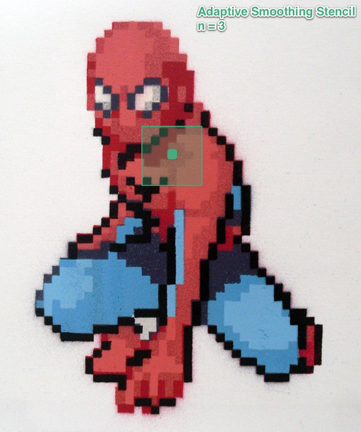
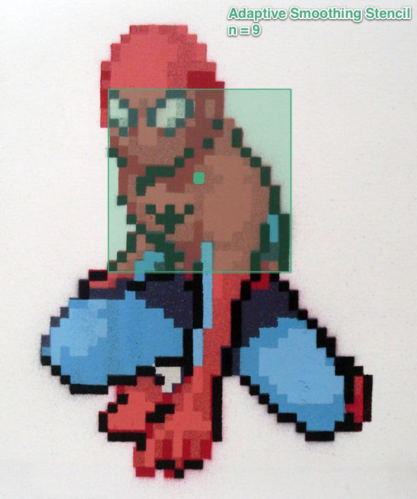
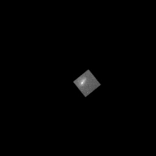
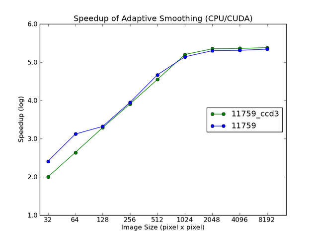

CS205 - Final Project
NASA Chandra X-Ray Observatory
December 4, 2011
Danny Gibbs
Harvard-Smithsonian Center for Astrophysics
dgibbs [at] head.cfa.harvard.edu
Christopher K. Lee
Harvard College
cklee [at] college.harvard.edu
Download the Gibbs-Lee FP here or on the command line:
$ git clone git@github.com:chriskelvinlee/nasa_chandra.git
Robust Parallel Adaptive Smoothing
Background - Chandra X-ray Observatory
Background - Adaptive Smoothing
Adaptive Smoothing in Layman’s Terms
The adaptive smoothing algorithm (ASMOOTH) is used widely in astronomy, medical imagery, animation rendering, and military applications to process data from sensor and adaptively filter noise by smoothing. The ASMOOTH is embarrassingly parallel and allows for refinement of micro-scale pixel features while maintaining macro-scale features over the image area.
Special thanks to Kenny Glotfelty of the Harvard-Smithsonian Center for Astrophysics (kjg [at] head.cfa.harvard.edu) for project idea and initial serial algorithm.
The purpose of this application is to parallelize the adaptive smoothing algorithm (ASMOOTH) in the NASA open-source CIAO toolkit and over the Chandra X-Ray Observatory data-set. A full resolution image file of a typical Chandra observation using the ACIS instrument is 8192x8192 pixels. The data value of a pixel correspond to the photon hits (X-ray source counts) and was held constant at 15 (Threshold). The smoothing stencil size over pixel ranged from n=1-4 (MaxRad). The serial ASMOOTH algorithm completes within 30min. - 4.5 days, its complexity in worst case scenario is O(n^4), and requires 3 sets of for-loops that were embarrassingly parallellized into a 3 kernel MPI/CUDA implementation. We successfully managed shared/global memory bounds and observed logarithmic speedup of 2.01-5.38x with errors from 8.05e-06 to 1.30e-05. In other parameter regimes where Threshold = 2-10 and RadMax = 4-9, we observed that the CUDA implementation became unstable due to rounding errors producing errors from 7.21e-02 to 1.66e-03. We hope to submit this application for consideration for the CIAO Contributed Scripts and Modules that is released with the CIAO 4.3.x software suite.
The Chandra X-ray Obervatory was launched by the NASA Columbia shuttle in 1999. Named after Indian-American physicists Subrahmanyan Cahndrasekhar, “Chandra” also means “luminous” in Sanskrit.
X-ray optic measurements are usually taken from space with satellite instrumentation to produce the best 2-dimensional angular resolution. This is because x-rays are absorbed in the Earth’s atmosphere. So in order to collect x-ray data, the instrumentation needs to be above the atmosphere. As a result, the Chandra X-ray Observatory is located in orbit around the Earth above the interfering atmosphere. The Chandra X-ray Observatory has three major parts: (1) the X-ray telescope, whose mirrors focus X-rays from celestial objects; (2) the science instruments which record the X-rays so that X-ray images can be produced and analyzed; and (3) the spacecraft, which provides the environment necessary for the telescope and the instruments to work.
The instrument we will be focusing on in the is project is Advanced CCD Imaging Spectrometer (ACIS). This is one of two focal plane instruments. This instrument is an array of charged coupled devices (CCD's), which are sophisticated versions of the crude CCD's used in digital cameras. This instrument is especially useful because it can make X-ray images, and at the same time, measure the energy of each incoming X-ray. Thus scientists can make pictures of objects using only X-rays produced by a single chemical element, and so compare (for example) the appearance of a supernova remnant in light produced by oxygen ions to that of neon or iron ions. It is the instrument of choice for studying temperature variations across X-ray sources such as vast clouds of hot gas in intergalactic space, or chemical variations across clouds left by supernova explosions.
ACIS Source: Harvard-Smithsonian Center for Astrophysics
Analytical software and algorithms are thus needed to produce accurate observations of Chandra observations. The Chandra X-Ray Observatory provides such software in the form of the “Chandra Interactive Analysis of Observations” or CIAO. CIAO is a flexible software suite that allows analysis of X-ray data collected from the Chandra Observatory as well as non-X-ray data from other missions. The CSC (Chandra Source Catalog) is a publicly accessible database that has combined data for most of the Chandra mission. One of the tools provided in the suite is called dmimgadapt() which we will be used as a basis for the project.
Source: Harvard CXC
|
|
 |  |
Figures 1a-d Diagram of smoothing stencil size over one pixel for the Adaptive Smoothing Algorithm where n=1, 2, 3, and 9. Each pixel will has a unique stencil size n corresponding to the data value represented in the pixel within Threshold and MaxRad parameter bounds.
Adaptive smoothing of astronomical images enhances signal to noise ratio with minimum loss of effective resolution and keeping photometric fluxes unaltered.
While traditional smoothing methods use the same window shape and size to smooth an image independent of its content, in adaptive smoothing, the window shape and size are varied across the image domain depending on local image content. In adaptive smoothing a window is sized according to the local gradient magnitude and shaped in such a way that it has a shorter side across an edge compared to along the edge. This mechanism maintains edge details while smoothing random noise.
Source (Verbatim): Max-Planck-Institut für Astronomie, NASA, and Fusion Systems
1). What is the problem you are trying to solve with this application?
The ASMOOTH algorithm is embarrassingly parallel. The problem is that the O(n^4) inefficiency and required three nested for-loops results in slow run-times. A full resolution image file of a typical Chandra observation using the ACIS instrument is 8192x8192 pixels. Due to time constraints and calculation complexities of algorithms that analyze the data, sometimes concessions need to be made. For example, CIAO provides a routine, dmimgadapt(), that takes an image as input then adaptively smooths the image. It does this by building a 2D box around each pixel until a user defined threshold is met, or a user defined max box size is encountered. The complexity of the algorithm in worst case scenario is O(n^4). Thus, with a large image, it can take days to achieve the output image. The data is usually scaled, or binned, by a factor of 8 in order to obtain a more manageable image size of 1024x1024. However, by doing so some of the finer detail of the image is lost. With this configuration, a typical file may take 30 minutes to produce an output file. The goal of the project is to modify the dmimgadapt() routine from C-code to a more general python implementation. Then we will implement a GPU version of the algorithm. When finished, we want to drastically improve the runtime of the algorithm, via the GPU, and test the ability to run the algorithm on a full resolution 8192x8192 image. Below is the psuedo code for the serial method:
# ----------------------
# Psuedo Code for serial method
#-----------------------
LOAD image, IMG
Let Lx = length of x-axis of IMG
Let Ly = length of y-axis of IMG
Let RAD = Lx, Ly float array init to 0
Let TOTAL = Lx, Ly float array init to 0
Let NORM = Lx, Ly float array init to 0
Let OUT = Lx, Ly float array init to 0
Let Threshold = min sum value
Let MaxRad = maximun allowable box size
#----------------------
Let w[*][*] = 1.0
for ( x = 0; x < Lx; x++)
for(y=0; y<Ly; y++)
q = 0
sum = 0
ksum = 0
s = q
While(sum < Threshold) && (q < MaxRad)
ss = q
sum = 0
ksum = 0
for(i=-s; i<=s; i++)
for(j=-s; j<=s; j++)
sum+= (IMG[x+i][y+j] * w[i+s][j+s])
ksum += (w[i+s][j+s])
end for j
end for i
q += 1
end while
RAD[x][y] = s
TOTAL[x][y] = sum
for(i = -s; i <= s; i++)
for(j = -s; j<=s; j++)
NORM[x+m][y+n] += (w[i+s][j+s]/ksum)
end for j
end for i
end for y
end for x
#--------------------
for(x=0; x<Lx; x++)
for(y=0; y< Ly; y++)
IMG[x][y] /= NORM[x][y]
end for y
end for x
#--------------------
for(x=0; x<Lx; x++)
for(y=0; y<Ly; y++)
s = RAD[x][y]
sum = 0
ksum = 0
for(i=-s; i <=s; i++)
for(j=-s; j<=s j++)
sum += (IMG[x+i][y+i]*w[i+s][j+s])
ksum += w[i+s][j+s]
end for j
end for i
OUT[x][y] = sum / ksum
end for y
end for x
See More: Github
What is the proposed solution?
Parallelize the existing method to adaptively smooth an image. The current implementation is a serial algorithm called dmimgadapt(). Each pixel in the image is independently smoothed until a given threshold is met. This is used to smooth high contrast ratio images: the goal is to apply little smoothing to bright objects and large smoothing to the background; with a need to preserve the total energy (or flux). The goal of the project is to modify the dmimgadapt() routine from C-code to a more general python implementation.
The specific Chandra instrument we will be focusing on in this project is the Advanced CCD Imaging Spectrometer (ACIS). This instrument is an array of charged coupled devices more commonely known as CCDs. This instrument is especially useful because it measures the energy of each incoming X-ray. The ACIS instrument is the most commonly used of the Observatory. Find more information regarding the ACIS instrument here.
2). Describe your data in detail: where did it come from, how did you acquire it, what does it mean, etc.
The data we are using comes from the publicly available observations of the Chandra X-Ray Observatory. Data collected from the observatory is considered proprietary for up to one year, then the data becomes public. One of the main methods to access the data is through the Chandra Data Archive. In our project we used the following Chandra Observations, denoted by Obs ID (Observation Identification Number):
a. OBSID 114
Object: CAS A
b. OBSID 7417
Object: Cluster in NGC 2071
c. OBSID 321
Object: NGC 4472 = M49 (Galaxy in Virgo)
d. OBSID 11759
Object: J0417.5-1154 (Strong lensing cluster)
On the Chandra Data Archive website we used the OBSID of the above observations in the "Observation ID" field. Then hit search. This brings up the matching observations. We then clicked the "Primary Products" radio button and then "Add to Retrieval List". We then selected "Retrieve Products". We then entered my email address to be notified when the observation data was available. When the email arrived we followed the instructions on using anonymous ftp and the directory location of the data to retrieve the files. Once I had the files we uncompressed the file resulting in a directory with the Obs ID and a "primary" subdirectory. The data files we want are in the "primary" directory. For our project we used the files ending with evt2.fits. These are the primary event data that have gone through two levels of automated pipeline processing. This file contains all of the information regarding the data collected by ACIS that we used to create our input images.
In order to prepare the data, tools from the CIAO software suite were used. In order to install the software visit the CIAO website. The website gives detailed directions for downloading and installing the software.
Steps for Obs ID 321:
1. We wanted to convert the evt2.fits file into separate files for each ccd and bin the data by 8 using thedmimg2jpg and dmkeypar tools from CIAO to determine which ccds were turned on during the observation. These are the command line calls we used:
%: dmkeypar "acisf00321N003_evt2.fits.gz" DETNAM echo+
%: ACIS-235678
%: dmimg2jpg "acisf00321N003_evt2.fits.gz[ccd_id=2][bin sky=::8]" out=321_ccd2.jpg scalefun=log
%: dmimg2jpg "acisf00321N003_evt2.fits.gz[ccd_id=3][bin sky=::8]" out=321_ccd3.jpg scalefun=log
%: dmimg2jpg "acisf00321N003_evt2.fits.gz[ccd_id=5][bin sky=::8]" out=321_ccd5.jpg scalefun=log
%: dmimg2jpg "acisf00321N003_evt2.fits.gz[ccd_id=6][bin sky=::8]" out=321_ccd6.jpg scalefun=log
%: dmimg2jpg "acisf00321N003_evt2.fits.gz[ccd_id=7][bin sky=::8]" out=321_ccd7.jpg scalefun=log
%: dmimg2jpg "acisf00321N003_evt2.fits.gz[ccd_id=8][bin sky=::8]" out=321_ccd8.jpg scalefun=log
2. We repeated the conversion for all four of our test Obs IDs.
3. Once we had a directory full of jpg images of all of the ccds for each of the observations I did a batch convert to turn them in png files. We did this using the MAC OS tool Automator to do the batch convert. These png images then became our input images for our python scripts.
In order to utilize the tools and methods we learned in this course, we wanted to use data images in the png file format. So we converted the Chandra data that original occurs in a fits file format to png files. For more about the data we used please visit the "Data" section of the website.
Re-implemented serial version from original C source into Python
3a). Describe your program design and why you chose the features you did.
Implemented 3 CUDA kernels that accessed shared/global memory w/ MPI
3b). Describe your program design and why you chose the features you did.
4a). How do you use your application (mouse and keyboard functions, input/output, etc)?
In order to run the serial version we ended up having to hard code some of the user defined values as there seemed to be an issue reading in command line arguments on the Resonance Cluster. So near the top of the file is the 'file_name' variable we use to to specify which image we wish to run through the algorithm.
We then have our 'Threshold' and 'MaxRad' variables. These are the user defined variables that specify the value of the pixels in the created box, Threshold, and the maximum size box to attempt to reach the threshold value, MaxRad.
The output image is created in the same directory as the input image. We remove the extension of the input file and then append '_smoothed_serial.png' to name.
While running our program on the Resonance cluster from the command line:
%: cd to base directory of our project
%: python image_adapt_serial_norm.py
4b). How do you use your application (mouse and keyboard functions, input/output, etc)?
Aforementioned Threshold and MaxRad parameters apply in GPU version.
While running our program on the Resonance cluster from the command line:
%: gpu-login
%: module load packages/pycuda/2011.1.2
%: python image_adapt_gpu_global.py # to run global memory
%: python image_adapt_gpu.py # to run shared memory
%: mpiexec -n 5 python image_adapt_mpi.py # to run MPI/CUDA
%: python rel_error # to check for error
Change Debug flag to 0 or 1 to produce gpu_output.txt to compare with serial_output.txt. Relative error is outputted in rel_error.txt. Make sure all file locations are correct.
5a) What is the performance of your code?
|
|
|
|
|
|
 |
|
| Fig 2k - 8192x8192 GPU ASMOOTH |
Figures 2a-k Example output of CIAO 11759_ccd3 original images and adaptively smoothed images with CUDA with Threashold = 15 and RadMax = 4. Serial implementation in Fig 2j would have taken 4.5 days to compute. ASMOOTH in Fig 2k took 1.65 seconds.
5b) What speedup and efficiency did you achieve?
We measured a logarithmic speedup of 2.01-5.38x over the two datasets 11759_ccd3 and 11759. As expected, speedup grew increased linearly as dimensions grew from 32x32 to 512x512 pixels. However, the the upper pixel regime from 1024x1024 to 8192x8192 pixels, with 2^20 = 1,048,576 pixels and 2^26 = 67,108,864 pixels, we quickly observe Ahmdal’s Law quickly take effect. Further measurements could have been made; however, the serial version was the bottleneck and took too much time to compute. Accuracy was verified with a rel_error.py script to ensure pixel representing X-Ray source hit count was accurate.
 |
Error Checking
Image Dimensions | Relative Pixel Error |
32 x 32 | 8.730360e-05 |
64 x 64 | 7.014218e-05 |
128 x 128 | 1.299115e-05 |
256 x 256 | 8.053484e-06 |
512 x 512 | 1.411130e-05 |
… | Serial version takes 2.5+ days |
Apart from marginal rounding error in float32, serial and parallel adaptively smoothed mages were verified to be identical and have relative pixel errors less than 1e-05.
Optimizations
5c.) What optimizations did you implement to achieve this speedup?
# Copy arrays from host to device once
IMG_device = gpuarray.to_gpu(IMG)
BOX_device = gpuarray.to_gpu(BOX)
NORM_device = gpuarray.to_gpu(NORM)
OUT_device = gpuarray.to_gpu(OUT)
# Copy image once from device to host
IMG_out = OUT_device.get()
sum += IMG[gtid + ii*Ly + jj]; [line 102, r]
NORM[gtid + ii*Ly + jj] += 1.0 / ksum; [line 121, w]
IMG[gtid] /= NORM[gtid]; [line 161, w]
OUT[gtid] = sum / ksum; [line 211, w]
comm = MPI.COMM_WORLD
size = comm.Get_size()
rank = comm.Get_rank()
file_set0 = ['extrap_data/11759_ccd3/11759_32x32.png',
'extrap_data/11759_ccd3/11759_64x64.png',
'extrap_data/11759_ccd3/11759_128x128.png',
'extrap_data/11759_ccd3/11759_256x256.png',
'extrap_data/11759_ccd3/11759_512x512.png']
parallel_smooth(file_set0[rank], rank, size, comm)
6.) What interesting insights did you gain from this project?
Danny
I know have a deeper understanding of the dmimgadapt() CIAO tool. Before this project I had never used it before at work. I now see the great benefits of using GPUs to analyze real life data. When I enrolled in this course I wasn't exactly sure how it would translate to the types of data I deal with and algorithms we implement at work, now I see how much more quickly and efficiently things can be handled with parallel processing. Whether it comes in the form of GPU or MPI, there is great benefit from utilizing these approaches in the astronomy field.
Christopher
Extensions
7.) Extensions and improvements can you suggest?
While implementing the project we ran into difficulty implementing a weighted sum approach. We had a serial version coded up utilizing a gaussian weighted sum, then when we were coding the parallel version we ran into difficulties. What took two lines to achieve in Python, was seemingly going to take 15-20 lines. So we deferred that as an item we would like to implement given more time. In addition to the gaussian weighted sum, there are other methods we could implement, like cone, boxcar, tophat, or mexican hat weighted sum approaches. In order to make the input files easier for us to deal with in python and with the installed packages on Resonance, we decided to convert the astronomical data from fits files ultimately to png files. An improvement we could deliver would be to handle the fits file format directly, read in the data, perform our adaptive smoothing algorithm, then write out a new fits file. This would also allow for a more one to one comparison between the C code implementation from CIAO tools to the Python implementation we used. The original C implementation has the option to output some of the intermediate data files. The user can specify to output a file of all of the sum values, a file of all the normalization values and also all the radius/box size values. The ultimate goal of the project would be to incorporate it into the CIAO data model. This would allow for seamless integration into data analysis for x-ray astronomers with access to a GPU. The CIAO Data Model (DM) is a versatile interface used by CIAO to examine and manipulate standard format data files (e.g Fits, ascii). This would greatly reduce the time for data analysis.
8.) What did you most enjoy about working on this project? What was the most challenging aspect? What was the most frustrating? What would you do differently next time?
Danny
I enjoyed being able to apply the concepts learned in the course to things I see at work. Many times in past courses I have taken, the projects end up being more of an academic exercise than real life applications. I see now why the instructors requesting people pick something they found interesting to work on because I did spent a lot of time on it and it was nice to know I can apply this knowledge to future projects outside of the course environment.
The most challenging aspect for me was to translate the existing C code with all of the specific "CIAOisms" and create a Python version of the code. Luckily, my boss, Kenny Glotfelty, provided a basic pseudo code representation of the algorithm. However, there were still challenges creating a pythonic version of a c algorithm. I am sure there are more pythonic ways to do some of the computations we ended up doing. So part of the frustration was learning the ins and outs of Python and realizing that somethings are not meant to have a direct c to python conversion. There are times when Python does things differently and it took time to learn and figure out what those things are.
One of the most frustrating things that I came across ended up being a simple issue of the type of input file we were using. CIAO provided us a tool called dmimg2jpg, so I used that to create what I thought was a useful input jpg image. I thought I had the serial version of the code working wonderfully but ended up with a terrible output image. So I went through the algorithm line by line. When I got to the top I thought that surely the input file must be ok, but they way I was reading the file, the type I needed was a png file, the jpg version was not giving the same values as the png version. So many hours were spent looking into the problem and many tears of joy occurred when the solution was found. It always seems that the hardest bugs are the smallest ones at the end to diagnose and deal with.
I think the thing that I would do differently next time would be to have a better overall understanding of the project I was dealing with going into it. I didn't realize the complexity of the original algorithm and assumed the time window we had for the final project was ample time to work through it all. Had I known the specific complexities of dealing with C and Python in the same time, I think I might not have bitten of more than I could chew. I think I also would have spent more time at the beginning getting things set up to use the fits file format so we would have had the exact same data to work with as the C program. Then we could have had a direct comparison between the C algorithm and the GPU algorithm, instead of a more generic Python version of the algorithm.
Christopher
This was a very enjoyable final project with the right amount of difficulty. I am surprised by my own ability to implement serial algorithms into parallel versions with fair proficiency. I especially enjoyed learning more about astronomy and pushing what I had learned in class to complete tasks that probably haven’t been done before. Thinking through how to implement 3 CUDA kernels, then optimizing work-flow with MPI+CUDA, really forced me to learn and think about the course material very well.
Scientific computing is a challenging area of study that has wide-implications. My only cautionary advice that I’d give myself: shared memory can sometimes cause more headaches than solutions, especially in cases where memory r/w are sparse to begin with.
Contact
Danny Gibbs
Harvard-Smithsonian Center for Astrophysics
dgibbs [at] head.cfa.harvard.edu
Christopher Lee
Harvard University
cklee [at] college.harvard.edu
About
Danny Gibbs works for the Harvard-Smithsonian Center for Astrophysics in Cambridge, MA. He has been focusing on application software for data analysis/reduction for the Chandra X-Ray Observatory for almost 5 years. The large data sets that astronomical data provides are very applicable to this course. He is taking this class to advance his understanding of parallel computing to bring to the job site.
Christopher K. Lee is a student at the College studying Applied Mathematics. He is interested in applying to CS graduate school, and would like to get more exposure to the sciences. Christopher's father is a head engineer for Northrup Grumman and introduced him to space technologies while growing up.
View the speedup calculations here.